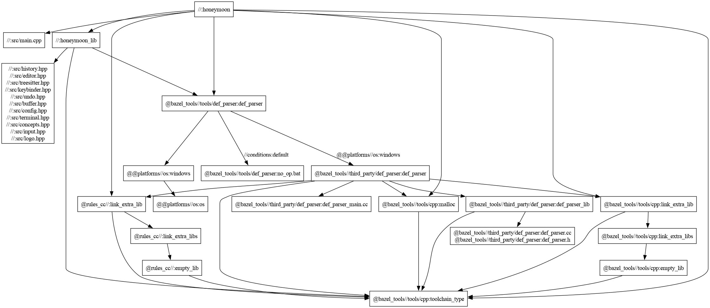

Framework: GoogleTest (gtest) via Bazel
Suites: 5 | Tests: 50+
Policy: No mocks. No stubs. Real files, real buffers ehe.
# Run all suites
bazel test //tests:all
# Run a specific suite
bazel test //tests:buffer_test
bazel test //tests:undo_test
bazel test //tests:config_test
bazel test //tests:keybinder_test
bazel test //tests:input_test
# See full output
bazel test //tests:all --test_output=alltests/buffer_test.cpp
The gap buffer is the whole editor's spine. If this breaks, everything breaks.
Every public method gets tested: construction, single-char and string insertion,
backward and forward deletion, range deletion, cursor movement, clamping,
content access, file I/O, dirty flag, move semantics, and gap expansion past
DEFAULT_GAP_SIZE (1024 bytes).
TEST(GapBufferTest, InsertAtCursorPosition) {
GapBuffer buf;
buf.insert_string("Helo");
buf.move_gap(3); // cursor after "Hel"
buf.insert_char('l'); // → "Hello"
EXPECT_EQ(buf.get_content(), "Hello");
EXPECT_EQ(buf.get_cursor(), 4);
}
TEST(GapBufferTest, GapExpandsWhenFull) {
GapBuffer buf;
std::string big(GapBuffer::DEFAULT_GAP_SIZE + 100, 'x');
buf.insert_string(big);
EXPECT_EQ(buf.size(), GapBuffer::DEFAULT_GAP_SIZE + 100);
EXPECT_EQ(buf.get_content(), big);
}tests/undo_test.cpp
Snapshot-based undo/redo. The key design: snapshot_for_undo
captures state before an edit, not after. The first snapshot in a
typing run sets typing_group_active = true, which blocks further
snapshots until close_typing_group() is called. Typing "hello" is
one undo step, not five. (I mean its not really a group but ykwhatevs)
// TestUndo exposes protected members for direct testing
struct TestUndo : honeymoon::mem::UndoHistory<> {
using honeymoon::mem::UndoHistory<>::snapshot_for_undo;
using honeymoon::mem::UndoHistory<>::apply_undo;
using honeymoon::mem::UndoHistory<>::apply_redo;
using honeymoon::mem::UndoHistory<>::close_typing_group;
};
TEST(UndoTest, FullUndoRedoCycle) {
TestUndo undo;
// Snapshot before each keystroke, not after
undo.close_typing_group(); undo.snapshot_for_undo("", 0);
undo.close_typing_group(); undo.snapshot_for_undo("a", 1);
undo.close_typing_group(); undo.snapshot_for_undo("ab", 2);
// current state is "abc" - passed as cur_content, never snapshotted itself
auto s1 = undo.apply_undo("abc", 3);
EXPECT_EQ(s1->content, "ab"); // returns pre-'c' snapshot
auto s2 = undo.apply_undo(s1->content, s1->cursor);
EXPECT_EQ(s2->content, "a");
auto r1 = undo.apply_redo(s2->content, s2->cursor);
EXPECT_EQ(r1->content, "ab"); // redo restores forward
}tests/config_test.cpp
Config parsing, save/reload, and path discovery. Every test that writes
.honeymoonrc uses the ConfigFileTest fixture,
which runs TearDown() even when an assertion fails halfway through.
No leftover files, no test pollution. HOME and
XDG_CONFIG_HOME are redirected per-test so your real config never
touches the suite. Bazel's sandbox enforces this anyway.
class ConfigFileTest : public ::testing::Test {
protected:
void SetUp() override {
// Save and redirect env so find_path() finds nothing real
const char* h = getenv("HOME");
if (h) { old_home_ = h; had_home_ = true; }
setenv("HOME", "/tmp", 1);
unsetenv("XDG_CONFIG_HOME");
}
void TearDown() override {
unlink(".honeymoonrc"); // runs even after ASSERT_ failure
if (had_home_) setenv("HOME", old_home_.c_str(), 1);
else unsetenv("HOME");
}
// ...
};
TEST_F(ConfigFileTest, ParseTabWidth) {
FILE* f = fopen(".honeymoonrc", "w");
ASSERT_TRUE(f);
fprintf(f, "tab_width 8\n");
fclose(f);
Config cfg;
EXPECT_TRUE(cfg.load());
EXPECT_EQ(cfg.tab_width, 8);
}tests/keybinder_test.cpp
The keybinds.moon parser. Empty files, single keys, multi-key
chords, M- prefix expansion to [Esc, key], named
keys (PageUp, Home, etc.), comment stripping, and
unknown key rejection. If the parser silently swallows a bad binding
users will think their keyboard is broken.
TEST(KeyBinderTest, MetaPrefixExpandsToEsc) {
honeymoon::test::TempFile tf("M-x eval-expression\n");
ASSERT_TRUE(tf);
auto bindings = KeyBinder::load_from_file(tf.path());
ASSERT_EQ(bindings.size(), 1);
ASSERT_EQ(bindings[0].keys.size(), 2);
EXPECT_EQ(bindings[0].keys[0], Key::Esc); // M- → Esc prefix
EXPECT_EQ(bindings[0].keys[1], Key('x'));
EXPECT_EQ(bindings[0].action, "eval-expression");
}
TEST(KeyBinderTest, MultiKeyBinding) {
honeymoon::test::TempFile tf("C-x C-c quit\n");
ASSERT_TRUE(tf);
auto bindings = KeyBinder::load_from_file(tf.path());
EXPECT_EQ(bindings[0].keys[0], Key::Ctrl_X);
EXPECT_EQ(bindings[0].keys[1], Key::Ctrl_C);
EXPECT_EQ(bindings[0].action, "quit");
}tests/input_test.cpp
The Key enum utilities. is_printable,
to_string for all named keys and printable chars,
and key_from_string round-trips. Also covers
KeyChord equality. Small surface,but a bug here would be hard to figure our ig
TEST(InputTest, ToStringPrintable) {
EXPECT_EQ(to_string(static_cast<Key>('A')), "A");
EXPECT_EQ(to_string(static_cast<Key>('z')), "z");
}
TEST(InputTest, KeyFromStringReturnsNoneForInvalid) {
EXPECT_EQ(key_from_string("NotAKey"), Key::None);
EXPECT_EQ(key_from_string(""), Key::None);
}tests/test_utils.hpp
RAII wrapper. Creates a mkstemp temp file with given content,
deletes it on destruction. If the write is short or fails, the object
invalidates itself (operator bool returns false) so tests
don't silently pass against a corrupted file.
// Usage: just construct it, check operator bool, and use path()
honeymoon::test::TempFile tf("tab_width 8\n");
ASSERT_TRUE(tf);
cfg.load_from_file(tf.path());
// tf auto-deleted when it goes out of scope
RAII wrapper for environment variables. Saves the current value, sets
a new one, restores on destruction. Env mutation does not leak between
tests even when assertions fire early. Pass nullptr to unset.
// Redirect HOME for the duration of the block
honeymoon::test::ScopedEnv home("HOME", tmpdir);
honeymoon::test::ScopedEnv xdg("XDG_CONFIG_HOME", nullptr); // unsets it
cfg.save(); // writes to tmpdir/.config/honeymoon/config.moon
reload.load(); // reads it back
// HOME and XDG_CONFIG_HOME restored automatically here
Every test suite depends on honeymoon_lib. Touch the lib,
all five suites rebuild.(TODO add a image here for DAG maybe?)

Generated with:
bazel query 'deps(//:honeymoon)' --output graph | dot -Tpng > graph.png
If you can't measure it you can't fix it. my guide to how to actually find out where the time goes.
bazel clean && time bazel build //:honeymoonWipes the output tree first. This is worst-case compile cost. Run it once after a big refactor to see if you've made things worse.
time bazel build //:honeymoonNothing changed means under a second. This is what your edit-compile loop actually feels like day to day.
bazel build //:honeymoon --profile=profile.gz
bazel analyze-profile profile.gzSlowest actions, critical path, parallelism efficiency, cache hit rate. The critical path is what matters: it's the longest sequential chain and it sets the floor. No amount of extra cores fixes a long critical path.
# One shot
time ./bazel-bin/honeymoon large_file.txt
# Statistics (install hyperfine first)
hyperfine --warmup 3 './bazel-bin/honeymoon large_file.txt'
hyperfine runs the command multiple times and gives you mean,
standard deviation, min, max. The --warmup runs let the OS
page cache settle before measuring. Without warmup you're benchmarking
your disk.
bazel build //:honeymoon --compilation_mode=dbg
perf record -g ./bazel-bin/honeymoon large_file.txt
perf report
dbg disables optimization and keeps symbols so stack traces
are readable. For real performance numbers use opt (the default).
bazel build //:honeymoon --compilation_mode=dbg
valgrind --tool=callgrind ./bazel-bin/honeymoon test.txt
kcachegrind callgrind.out.*
Callgrind counts instructions per function. Good for finding which
buffer operations are eating the most. kcachegrind turns
that data into a visual call graph so you don't have to squint at numbers.
Key::ArrowRight used to equal Key::None.
Both were -999. The fix was obvious in retrospect: None = -9999.
The old collision caused every Right arrow binding to be silently dropped
by the keybinder's k != Key::None guard. nobody :( noticed until
the tests were written. sob sob
Undo snapshots store pre-edit state. snapshot_for_undo("ab", 2)
is called before typing 'c', not after. Tests that got this backwards
would assert the wrong values on undo and pass for the wrong reason.
HOME, your keybinds.moon, or any config files on your machine.
If a test fails on your box but passes in CI, check your environment maybe
If someone on an older machine tells you the build is broken and gtest won't
compile, this is probably why. Bazel 9 removed auto-loading of
cc_library and cc_test as native rules. You now
have to explicitly declare where they come from:
load("@rules_cc//cc:defs.bzl", "cc_library", "cc_test")
GoogleTest 1.17.0's own BUILD.bazel didn't have this. It was
written assuming the old Bazel behavior where these rules were just
available everywhere. Bazel 7 and 8: fine. Bazel 9: instant build failure,
cryptic error about cc_library not being defined.
The fix is in third_party/googletest_bazel9.patch. It patches
gtest's BUILD.bazel at fetch time to add the missing
load(), and is applied automatically via
single_version_override in MODULE.bazel:
single_version_override(
module_name = "googletest",
version = "1.17.0",
patches = ["//third_party:googletest_bazel9.patch"],
patch_strip = 1,
)
You never have to think about it. But if you're cloning this repo and
something explodes with a message about re2 or
cc_library not declared, check your Bazel version first:
bazel versionAnything below 9 and the patch is unnecessary but harmless.